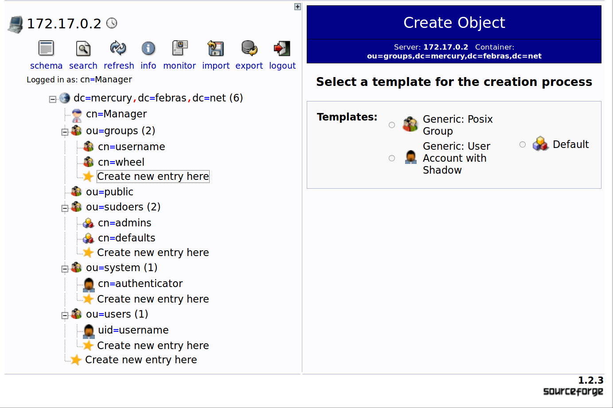

Аутентификация пользователей CentOS 5/6 с использованием OpenLDAP 2.3/2.4
Содержание
- Введение
- 1. Установка и настройка сервера OpenLDAP
- 1.1. Установка OpenLDAP
- 1.2. Добавление файлов конфигурации базы данных HDB
- 1.3. Добавление файлов наборов схем данных
- 1.4. Выбор варианта настройки схемы каталога LDAP
- 1.5. Предварительная настройка схемы каталога LDAP
- 1.6. Дополнительно. Предварительная настройка схемы каталога LDAP с помощью ldif формата
- 2. Настройка аутентификации пользователей при помощи LDAP
- 3. Схема каталога LDAP
- 4. Процесс добавления нового пользователя в систему
Введение
В процессе написания использовались материалы:
Конфигурация используемых на нашем демо-стенде контейнеров:
| Роль | Имя хоста | ОС | Конфигурация хоста |
|---|---|---|---|
| Docker Engine | kairos | Ubuntu 14.04 | Docker 1.12.5 |
| Служба каталогов | server-ldif5 | CentOS 5 | OpenLDAP 2.3 server, ldif; phpLDAPadmin 1.2.3, custom |
| Служба каталогов | server-ldif6 | CentOS 6 | OpenLDAP 2.4 server, ldif; phpLDAPadmin 1.2.3, custom |
| Служба каталогов | server-conf5 | CentOS 5 | OpenLDAP 2.3 server, conf; phpLDAPadmin 1.2.3, custom |
| Служба каталогов | server-conf6 | CentOS 6 | OpenLDAP 2.4 server, conf; phpLDAPadmin 1.2.3, custom |
| Служба каталогов | server-conf7 | CentOS 7 | OpenLDAP 2.4 server, conf; |
| Клиент службы каталогов | client5 | CentOS 5 | OpenLDAP 2.3 client |
| Клиент службы каталогов | client6 | CentOS 6 | OpenLDAP 2.4 client |
| Клиент службы каталогов | client7 | CentOS 7 | OpenLDAP 2.4 client |
| Клиент службы каталогов | gui | Debian 8 | phpLDAPadmin 1.2.3, custom |
Команды и конфигурационные файлы прошли проверку на работоспособность в тестовом программном окружении, доступном в проекте cc-ldap-centos1.
1. Установка и настройка сервера OpenLDAP
Необходимо разработать документацию по установке и настройке сервера LDAP в ОС CentOS 5. Предпочтение отдавать реализациям, доступным в базовом репозитории дистрибутива. Проверить работоспособность выработанных инструкций в ОС CentOS 6.
1.1. Установка OpenLDAP
Где работаем: контейнеры server-…..
Базовые репозитории дистрибутивов CentOS 5 и CentOS 6 содержат 2.3 и 2.4 версию OpenLDAP, соответственно. Выполнив стандартную установку
yum -y install openldap openldap-servers openldap-clients openssl sudo
yum -y install php php-ldap wget
yum -y install openldap-servers-overlays
wget http://dl.fedoraproject.org/pub/epel/5/i386/phpldapadmin-1.2.3-1.el5.noarch.rpm
rpm -i phpldapadmin-1.2.3-1.el5.noarch.rpm
wget http://dl.fedoraproject.org/pub/epel/6/i386/phpldapadmin-1.2.3-2.el6.noarch.rpm
rpm -i phpldapadmin-1.2.3-2.el6.noarch.rpm
получаем две конфигурации, различающиеся в некоторых деталях. Например, название сервиса: ldap в случае CentOS 5/2.3 OpenLDAP (5/2.3) и slapd в случае CentOS 6/2.4 OpenLDAP (6/2.4).
1.2. Добавление файлов конфигурации базы данных HDB
Где работаем: контейнеры server-…..
Для запуска сервиса ldap (slapd) необходимо подготовить директорию и файл конфигурации базы данных. Расположение образца файла настройки, в 5/2.3
cp /etc/openldap/DB_CONFIG.example /var/lib/ldap/DB_CONFIG
chown ldap. /var/lib/ldap/DB_CONFIG
а в 6/2.4
cp /usr/share/openldap-servers/DB_CONFIG.example /var/lib/ldap/DB_CONFIG
chown ldap. /var/lib/ldap/DB_CONFIG
Используем настройки без изменений в обеих конфигурациях. В подразделе 3.2 будет осуществлено связывание базы данных HDB и точки ветвления дерева DIT, соответствующей домену dc=mercury,dc=febras,dc=net.
В случае использования OpenLDAP версии 2.4 вместо базы данных HDB в качестве бэкенда можно использовать отображаемую в памяти базу данных MDB. Версия 2.3 не поддерживает MDB.
1.3. Добавление файлов наборов схем данных
Где работаем: контейнеры server-…..
Каталог LDAP имеет раздел cn=schema, содержащий все определения системной схемы данных, которые вкомилированы в ldap (slapd). Сюда же подключаются дополнительные специфические схемы данных, см. расп. 16. Подготовим необходимые файлы (не включенные в поставку OpenLDAP), для 5/2.3
cp /usr/share/doc/sudo-1.7.2p1/schema.OpenLDAP /etc/openldap/schema/sudo.schema
chown ldap. /etc/openldap/schema/sudo.schema
и для 6/2.4
cp /usr/share/doc/sudo-1.8.6p3/schema.OpenLDAP /etc/openldap/schema/sudo.schema
chown ldap. /etc/openldap/schema/sudo.schema
В подразделе 3.4 для создания подразделения sudoers используется класс из файла sudo.schema.
1.4. Выбор варианта настройки схемы каталога LDAP
Конфигурация 6/2.4 поставляется с тремя вариантами базовых настроек, осуществляемых через файлы slapd.conf.obsolete, slapd.ldif.example и, доступной по умолчанию, предварительно сформированной директорией slapd.d. При этом, настройка с помощью файла slapd.ldif.example подразумевает использование утилиты slapadd, как это рекомендуется в разделе "быстрый старт" руководства2. Конфигурация 5/2.3 по умолчанию настраивается только файлом slapd.conf, предварительно сформированная директория slapd.d в формате ldif отсутствует. Такой подход считается устаревшим, рекомендуется3 использовать ldif формат и преобразовывать файл slapd.conf настройки в директорию slapd.d с помощью утилиты slaptest.
Все варианты настроек разделяются на два существенно различающихся способа. Первый способ включает в себя настройку с помощью conf файла (конвертация через slaptest) и предварительно сформированную директорию slapd.d (только для версии 2.4). Эти два варианта являются взаимозаменяемыми и формируют практически идентичные результирующие файлы директории slapd.d. Второй способ заключается в использовании файла slapd.ldif и утилиты slapd. В этом случае, содержимое файлов директории slapd.d существенно отличается, по сравнению с первым способом. Дело в том, что при использовании первого способа в файлах директории slapd.d присутствует большое количество дополнительных параметров (явно не указанных в файле slapd.conf), а при использовании второго — только те, которые явно прописываются в файле slapd.ldif.
| Способы настройки | поддержка ldif | 2.3 | 2.4 |
|---|---|---|---|
| Настройка с помощью файла slapd.conf | конвертация slaptest | да | да |
| Настройка с помощью файла slapd.ldif | да | особо | особо |
| Предварительно сформированная директория slapd.d | да | нет | да |
Какой вариант настройки выбрать? Если требуется наличие тех дополнительных параметров, которые разработчики посчитали нужным включить в настройки по умолчанию, то выбирается первый способ настройки — основной. При этом, если выбирается OpenLDAP 2.3, то используются файл slapd.conf и утилита slaptest. А если версия 2.4, то можно в качестве равноценной альтернативы воспользоваться предварительно сформированной директорией slapd.d.
Первичный доступ к каталогу LDAP, использующему только предварительно сформированную директорию slapd.d без conf-файла, осуществляется при помощи ldapi интерфейса, когда в качестве rootdn выступает системный пользователь root (при этом его dn выглядит как gidNumber=0+uidNumber=0,cn=peercred,cn=external,cn=auth). В случае использования conf-файла необходимо указать пароль для rootdn. Пользователь rootdn имеет права на чтение и запись для всего содержимого. Знак "*" в ACL применяется ко всем записям, кроме записи rootdn.
Если же потребуется тщательно настраивать конфигурацию с нуля, полностью контролируя все параметры которые будут задействованы, то нужно воспользоваться вторым способом — дополнительным.
1.5. Предварительная настройка схемы каталога LDAP
Где работаем: контейнеры server-conf.
Продемонстрируем первый способ настройки. Внесем небольшие изменения в конфигурационный файл для 5/2.3
8a9,11 > include /etc/openldap/schema/sudo.schema > include /etc/openldap/schema/misc.schema > include /etc/openldap/schema/ppolicy.schema 21c24 < # modulepath /usr/lib64/openldap --- > modulepath /usr/lib64/openldap 33c36 < # moduleload ppolicy.la --- > moduleload ppolicy.la 50,52c53,55 < # TLSCACertificateFile /etc/pki/tls/certs/ca-bundle.crt < # TLSCertificateFile /etc/pki/tls/certs/slapd.pem < # TLSCertificateKeyFile /etc/pki/tls/certs/slapd.pem --- > TLSCACertificateFile /etc/openldap/certs/ca-bundle.crt > TLSCertificateFile /etc/openldap/certs/server.crt > TLSCertificateKeyFile /etc/openldap/certs/server.key 83a87,89 > database config > rootdn "cn=Manager,cn=config" > rootpw {SSHA}7/mVSaKAJnSI99TXgvIwnA+ItLAnST+N 85c91,93 < database bdb --- > database monitor > > database hdb 110a119,121 > > overlay ppolicy > ppolicy_default "cn=passwordDefault,ou=policies,dc=my-domain,dc=com \ No newline at end of file
и произведем первый запуск сервиса
mkdir -p /etc/openldap/certs/
cp /root/server.key /root/server.crt /root/ca-bundle.crt /etc/openldap/certs/
chown ldap. /etc/openldap/certs/server.key /etc/openldap/certs/server.crt /etc/openldap/certs/ca-bundle.crt
mv /etc/openldap/slapd.conf /etc/openldap/slapd.conf.original
cp /root/slapd.conf /etc/openldap/slapd.conf
ROOT_PWD=$(slappasswd -s $LDAP_ROOT_PASSWORD)
# Use bash variable substitution to escape special chars http://stackoverflow.com/a/14339705
sed -i "s+%LDAP_ROOT_PASSWORD%+${ROOT_PWD//+/\\+}+" /etc/openldap/slapd.conf
chown ldap. /etc/openldap/slapd.conf
diff /etc/openldap/slapd.conf.original /etc/openldap/slapd.conf > /gen/slapd.diff || true
service ldap start
Выполним аналогичные действия для 6/2.4
17a18 > include /etc/openldap/schema/sudo.schema 50c51 < # moduleload ppolicy.la --- > moduleload ppolicy.la 66,68c67,69 < TLSCACertificatePath /etc/openldap/certs < TLSCertificateFile "\"OpenLDAP Server\"" < TLSCertificateKeyFile /etc/openldap/certs/password --- > TLSCACertificateFile /etc/openldap/certs/ca-bundle.crt > TLSCertificateFile /etc/openldap/certs/server.crt > TLSCertificateKeyFile /etc/openldap/certs/server.key 102a104,106 > rootdn "cn=Manager,cn=config" > rootpw {SSHA}oodf//2UugLI5Mveplim7BflXi3U8yFb > 114c118 < database bdb --- > database hdb 140a145,147 > > overlay ppolicy > ppolicy_default "cn=passwordDefault,ou=policies,dc=my-domain,dc=com \ No newline at end of file
cp /root/server.key /root/server.crt /root/ca-bundle.crt /etc/openldap/certs/
chown ldap. /etc/openldap/certs/server.key /etc/openldap/certs/server.crt /etc/openldap/certs/ca-bundle.crt
cp /root/slapd.conf.obsolete /etc/openldap/slapd.conf
ROOT_PWD=$(slappasswd -s $LDAP_ROOT_PASSWORD)
# Use bash variable substitution to escape special chars http://stackoverflow.com/a/14339705
sed -i "s+%LDAP_ROOT_PASSWORD%+${ROOT_PWD//+/\\+}+" /etc/openldap/slapd.conf
chown ldap. /etc/openldap/slapd.conf
rm -rf /etc/openldap/slapd.d
diff /usr/share/openldap-servers/slapd.conf.obsolete /etc/openldap/slapd.conf > /gen/slapd.obsolete.diff || true
service slapd start
Теперь для обеих конфигураций можно осуществить переход к ldif формату и избавиться от slapd.conf
sleep 3
kill -INT `cat /var/run/openldap/slapd.pid`
rm -rf /etc/openldap/slapd.d
oldpath=`pwd`
cd /etc/openldap
mkdir slapd.d
slaptest -f slapd.conf -F slapd.d
chown -R ldap:ldap slapd.d
chmod -R 0750 slapd.d
mv slapd.conf slapd.conf.bak
cd $oldpath
Если не осуществлять переход к ldif формату, ограничившись conf файлом, необходимо либо все настройки файла domain.ldif (см. подраздел 3.2) перенести в conf файл (записав их в формате conf файла), либо загружать их каждый раз при перезапуске сервиса. Использование ldif формата позволяет хранить все настройки в директории slapd.d.
После перезапуска, для 5/2.3
service ldap start
и для 6/2.4
service slapd start
получаем сервисы, отличающиеся только настройками по умолчанию, поставляемыми из базовых репозиториев в файлах /etc/openldap/slapd.conf (5/2.3) и /usr/share/openldap-servers/slapd.conf.obsolete (6/2.4).
Дальнейшая настройка схемы осуществляется в разделе 3.
1.6. Дополнительно. Предварительная настройка схемы каталога LDAP с помощью ldif формата
Где работаем: контейнеры server-ldif.
Продемонстрируем второй способ настройки для обеих конфигураций.
Конфигурация 5/2.3 поставляется со схемами только в schema формате, а 6/2.4 — как в schema, так и в ldif формате. Файл sudo.schema доступен только в schema формате. С помощью скрипта 2.5-schema-ldif.sh4 преобразуем необходимые схемы. Чтобы иметь доступ к каталогу LDAP для конфигурирования схемы, пропишем пароль менеджера схемы cn=Manager,cn=config. Кроме того, добавим минимальные настройки для monitor и настроим базу HDB. Используем "оффлайновую" утилиту slapadd для создания минимума конфигурационных настроек, позволяющих запустить сервер.
rm -rf /etc/openldap/slapd.d
rm -f /etc/openldap/slapd.conf
mkdir -p /etc/openldap/slapd.d
oldpath=`pwd`
cd /etc/openldap/schema
SCHEMAD=`pwd` SCHEMAS='core.schema cosine.schema inetorgperson.schema nis.schema sudo.schema misc.schema ppolicy.schema' /root/2.5-schema-ldif.sh
cp -R /etc/openldap/schema /gen/schema
cd $oldpath
ROOT_PWD=$(slappasswd -s $LDAP_ROOT_PASSWORD)
# Use bash variable substitution to escape special chars http://stackoverflow.com/a/14339705
sed -i "s+%LDAP_ROOT_PASSWORD%+${ROOT_PWD//+/\\+}+" /root/slapd.ldif
slapadd -b cn=config -F /etc/openldap/slapd.d -l /root/slapd.ldif || true
chown -R ldap. /etc/openldap/slapd.d/
dn: cn=config
objectClass: olcGlobal
olcPidFile: /var/run/openldap/slapd.pid
olcArgsFile: /var/run/openldap/slapd.args
cn: config
dn: olcDatabase={0}config,cn=config
objectClass: olcDatabaseConfig
olcDatabase: {0}config
olcRootDN: cn=Manager,cn=config
olcRootPW: %LDAP_ROOT_PASSWORD%
dn: cn=schema,cn=config
objectClass: olcSchemaConfig
cn: schema
include: file:///etc/openldap/schema/core.ldif
include: file:///etc/openldap/schema/cosine.ldif
include: file:///etc/openldap/schema/inetorgperson.ldif
include: file:///etc/openldap/schema/nis.ldif
include: file:///etc/openldap/schema/sudo.ldif
include: file:///etc/openldap/schema/misc.ldif
include: file:///etc/openldap/schema/ppolicy.ldif
dn: olcDatabase=monitor,cn=config
objectClass: olcDatabaseConfig
olcDatabase: monitor
dn: olcDatabase=hdb,cn=config
objectClass: olcDatabaseConfig
objectClass: olcHdbConfig
olcDatabase: hdb
olcSuffix: dc=my-domain,dc=com
olcRootDN: cn=Manager,dc=my-domain,dc=com
olcDbDirectory: /var/lib/ldap
olcDbIndex: objectClass eq,pres
olcDbIndex: ou,cn,mail,surname,givenname eq,pres,sub
olcDbIndex: uidNumber,gidNumber,loginShell eq,pres
olcDbIndex: uid,memberUid eq,pres,sub
olcDbIndex: nisMapName,nisMapEntry eq,pres,sub
dn: cn=module{0},cn=config
objectClass: olcModuleList
olcModulePath: /usr/lib64/openldap
cn: module{0}
olcModuleLoad: ppolicy.la
dn: olcOverlay=ppolicy,olcDatabase={2}hdb,cn=config
objectClass: olcOverlayConfig
objectClass: olcPPolicyConfig
olcOverlay: ppolicy
olcPPolicyDefault: cn=passwordDefault,ou=policies,dc=my-domain,dc=com
olcPPolicyHashCleartext: FALSE
olcPPolicyUseLockout: FALSE
olcPPolicyForwardUpdates: FALSE
После перезапуска, для 5/2.3
service ldap start
и для 6/2.4
service slapd start
получаем сервисы, отличающиеся только настройками схемы, содержащимися в исходных кодах разных версий OpenLDAP. Например, для конфигурации 5/2.3 требуется добавить настройки frontend базы, а для 6/2.4 эти настройки добавляются автоматически из исходного кода OpenLDAP (что, кстати говоря, несколько нарушает прозрачность — появляется то, что явно не указано в файле slapd.ldif). Все дальнейшие изменения уже осуществляются с помощью "онлайновых" утилит ldapadd и ldapmodify.
sleep 2
ldapadd -v -D cn=Manager,cn=config -f /root/front.ldif -x -w $LDAP_ROOT_PASSWORD || true
Специальная база данных frontend содержит настройки, которые применяются глобально ко всем остальным базам данных. В нашем случае в наличии одна база HDB и никаких специальных настроек для frontend.
dn: olcDatabase={-1}frontend,cn=config
objectClass: olcDatabaseConfig
objectClass: olcFrontendConfig
olcSchemaDN: cn=Subschema
olcDatabase: {-1}frontend
Дальнейшая настройка схемы осуществляется в разделе 3.
2. Настройка аутентификации пользователей при помощи LDAP
Необходимо разработать документацию по настройке аутентификации пользователей при помощи LDAP в ОС CentOS 5. Проверить работоспособность выработанных инструкций в ОС CentOS 6.
В документацию должно входить:
- Список пакетов, которые необходимо установить;
- Список файлов, модификация которых необходима для настройки процесса аутентификации посредством LDAP;
- Описание всех опций, выставляемых в этих файлах.
Рассмотрим три задачи, возникающие при настройке аутентификации пользователей при помощи LDAP. Чтобы провести аутентификацию пользователя необходимо, чтобы клиентский хост имел право на чтение пользовательских данных на сервере LDAP. Для этого потребуется обеспечить механизм аутентификации клиентского хоста при помощи LDAP. Далее следует основная задача — это, собственно, настройка аутентификации пользователей в системе при помощи LDAP. И, наконец, вспомогательная задача аутентификации пользователя с повышением прав.
2.1. Требуемые пакеты
Где работаем: контейнеры client.
Для настройки клиентского подключения в 5/2.3 понадобятся следующие пакеты
yum install -y openssh-server openldap-clients nss_ldap authconfig yum install -y openldap openldap-servers finger sudo yum install -y sendmail sendmail-cf yum install -y libuser
Здесь также необходим пакет openldap-servers, поскольку утилиты для миграции пользователей содержатся в нем. Для 6/2.4 выполним
yum install -y openssh-server openldap-clients nss-pam-ldapd authconfig yum install -y openldap migrationtools finger sudo yum install -y sendmail sendmail-cf yum install -y libuser
2.2. Используемые команды
Где работаем: контейнеры client.
Воспользуемся утилитой authconfig для настройки аутентификации пользователей при помощи LDAP.
В 5/2.3 приходится использовать параметр enableshadow, поскольку эта функциональность отключена по умолчанию. Отдельно укажем параметр sudoers_base и параметры binddn и bindpw в настройках для pam_ldap (см. также настройки для authenticator в подразделе 3.2).
authconfig --enableshadow --enablemkhomedir --enableldap --enableldapauth \ --ldapserver=$LDAP_SERVER --ldapbasedn=$LDAP_BASEDN --update sed -i "s|pam_mkhomedir.so|pam_mkhomedir.so skel=/etc/skel umask=0077|g" /etc/pam.d/system-auth echo sudoers_base dc=mercury,dc=febras,dc=net >> /etc/ldap.conf echo sudoers_debug 0 >> /etc/ldap.conf echo binddn uid=authenticator,ou=system,dc=mercury,dc=febras,dc=net >> /etc/ldap.conf echo bindpw secret >> /etc/ldap.conf chmod 600 /etc/ldap.conf sed -i "s| positive-time-to-live passwd 600| positive-time-to-live passwd 0|g" /etc/nscd.conf sed -i "s| negative-time-to-live passwd 20| negative-time-to-live passwd 0|g" /etc/nscd.conf /etc/init.d/nscd start
sed -i "s|^modules = files shadow|modules = ldap|" /etc/libuser.conf sed -i "s|create_modules = files shadow|create_modules = ldap|" /etc/libuser.conf sed -i "s|# server = ldap|server = ldap://$LDAP_SERVER|" /etc/libuser.conf sed -i "s|# basedn = dc=example,dc=com|basedn = $LDAP_BASEDN|" /etc/libuser.conf sed -i "s|# userBranch = ou=People|userBranch = ou=users|" /etc/libuser.conf sed -i "s|# groupBranch = ou=Group|groupBranch = ou=groups|" /etc/libuser.conf sed -i "s|# binddn = cn=Manager,dc=example,dc=com|binddn = cn=Manager,dc=mercury,dc=febras,dc=net|" /etc/libuser.conf
Для 6/2.4 приходится отдельно прописывать параметр sudoers для nsswitch.conf, а в 5/2.3 он уже установлен еще до запуска authconfig. Для настройки sudo дополнительно указываются параметры uri и base, поскольку файл настроек теперь отдельный — sudo-ldap.conf. А параметры binddn и bindpw необходимо указать в 3х файлах: nslcd.conf, pam_ldap.conf и sudo-ldap.conf.
authconfig --enablemkhomedir --enableldap --enableldapauth \ --ldapserver=$LDAP_SERVER --ldapbasedn=$LDAP_BASEDN --update echo "TLS_REQCERT allow" >> /etc/openldap/ldap.conf echo sudoers: files ldap >> /etc/nsswitch.conf echo uri ldap://$LDAP_SERVER/ >> /etc/sudo-ldap.conf echo base dc=mercury,dc=febras,dc=net >> /etc/sudo-ldap.conf echo sudoers_base dc=mercury,dc=febras,dc=net >> /etc/sudo-ldap.conf echo sudoers_debug 0 >> /etc/sudo-ldap.conf echo binddn uid=authenticator,ou=system,dc=mercury,dc=febras,dc=net >> /etc/sudo-ldap.conf echo bindpw secret >> /etc/sudo-ldap.conf echo binddn uid=authenticator,ou=system,dc=mercury,dc=febras,dc=net >> /etc/pam_ldap.conf echo bindpw secret >> /etc/pam_ldap.conf echo binddn uid=authenticator,ou=system,dc=mercury,dc=febras,dc=net >> /etc/nslcd.conf echo bindpw secret >> /etc/nslcd.conf echo "tls_reqcert allow" >> /etc/nslcd.conf chmod 600 /etc/sudo-ldap.conf chmod 600 /etc/pam_ldap.conf chmod 600 /etc/nslcd.conf /etc/init.d/nslcd stop rm /var/run/nslcd/* /etc/init.d/nslcd start
2.3. Изменяемые файлы
Файлы, которые были модифицированы настройками подраздела 2.2 в случае 5/2.3
- nsswitch.conf — файл с настройками системных баз данных (в т.ч. порядка их просмотра) для диспетчера службы имен. Можно указывать спецификации службы, такие как files, ldap.
- /etc/ldap.conf — конфигурационный файл для pam_ldap.
- /etc/openldap/ldap.conf — конфигурационный файл для установки общесистемных настроек ldap-клиентов.
- system-auth — назначением этого файла является обеспечение общей конфигурации для всех приложений и сервисов, вызывающих библиотеку PAM.
- libuser.conf — файл с настройками стандартизованного интерфейса для управления и администрирования аккаунтов пользователей и групп.
- nscd.conf — конфигурационный файл демона кеша сервиса имен.
/etc/group /etc/group- /etc/gshadow /etc/ldap.conf /etc/libuser.conf /etc/nscd.conf /etc/nsswitch.conf /etc/openldap/ldap.conf /etc/pam.d/system-auth /etc/pam.d/system-auth-ac /etc/passwd /etc/passwd- /etc/shadow /etc/sysconfig/authconfig
Здесь в файлах group, group-, gshadow, shadow, passwd-, passwd — несущественные изменения, связанные с опциями enableshadow и enableldap; system-auth-ac и system-auth это один и тот же файл; файл authconfig содержит все опции, указанные при конфигурировании.
Для 6/2.4, кроме файлов nsswitch.conf, /etc/openldap/ldap.conf и system-auth, задействуются:
- nslcd.conf — конфигурационный файл для службы сервиса имен LDAP.
- Файлы, аналогичные system-auth. Они содержат только модули, которые выполняют аутентификацию с соответствующим видом аутентификационных токенов. Файлы fingerprint-auth и smartcard-auth нас не интересуют, а содержимое password-auth полностью идентично содержимому system-auth.
- pam_ldap.conf — конфигурационный файл для pam_ldap.
- sudo-ldap.conf — ldap-специфичная конфигурация для sudo. В случае 5/2.3 sudo использует файл /etc/ldap.conf.
/etc/libuser.conf /etc/nslcd.conf /etc/nsswitch.conf /etc/openldap/cacerts /etc/openldap/ldap.conf /etc/pam.d/fingerprint-auth /etc/pam.d/fingerprint-auth-ac /etc/pam.d/password-auth /etc/pam.d/password-auth-ac /etc/pam.d/smartcard-auth /etc/pam.d/smartcard-auth-ac /etc/pam.d/system-auth /etc/pam.d/system-auth-ac /etc/pam_ldap.conf /etc/sudo-ldap.conf /etc/sysconfig/authconfig
2.4. Описание опций
2.4.1. Опции, связанные с conf-файлами для 5/2.3
Файл /etc/ldap.conf. Параметр host не рекомендуется к использованию, используется параметр uri, который указывает адрес LDAP сервера и протокол, по которому осуществляется взаимодействие. Остальные параметры понятны: SSL не используется, ожидается md5 шифрование для паролей в PAM.
Файл nsswitch.conf. Для баз данных passwd, shadow, group, netgroup и automount добавляется спецификация службы ldap.
/etc/ldap.conf 17c17 < host 127.0.0.1 --- > #host 127.0.0.1 20c20 < base dc=example,dc=com --- > base dc=mercury,dc=febras,dc=net 295a296,303 > uri ldap://172.17.0.5/ > ssl no > tls_cacertdir /etc/openldap/cacerts > pam_password md5 > sudoers_base dc=mercury,dc=febras,dc=net > sudoers_debug 0 > binddn uid=authenticator,ou=system,dc=mercury,dc=febras,dc=net > bindpw secret /etc/libuser.conf 21,22c21,22 < modules = files shadow < create_modules = files shadow --- > modules = ldap > create_modules = ldap 64,65c64,65 < # server = ldap < # basedn = dc=example,dc=com --- > server = ldap://172.17.0.5 > basedn = dc=mercury,dc=febras,dc=net 68,69c68,69 < # userBranch = ou=People < # groupBranch = ou=Group --- > userBranch = ou=users > groupBranch = ou=groups 73c73 < # binddn = cn=Manager,dc=example,dc=com --- > binddn = cn=Manager,dc=mercury,dc=febras,dc=net
/etc/nscd.conf 44,45c44,45 < positive-time-to-live passwd 600 < negative-time-to-live passwd 20 --- > positive-time-to-live passwd 0 > negative-time-to-live passwd 0 /etc/nsswitch.conf 33,35c33,35 < passwd: files < shadow: files < group: files --- > passwd: files ldap > shadow: files ldap > group: files ldap 57c57 < netgroup: nisplus --- > netgroup: files ldap 61c61 < automount: files nisplus --- > automount: files ldap /etc/openldap/ldap.conf 13a14,16 > URI ldap://172.17.0.5/ > BASE dc=mercury,dc=febras,dc=net > TLS_CACERTDIR /etc/openldap/cacerts /etc/pam.d/system-auth 5c5,7
2.4.2. Опции, связанные с файлом system-auth для 5/2.3
< auth sufficient pam_unix.so try_first_pass nullok --- > auth sufficient pam_unix.so nullok try_first_pass > auth requisite pam_succeed_if.so uid >= 500 quiet > auth sufficient pam_ldap.so use_first_pass 8c10,13 < account required pam_unix.so --- > account required pam_unix.so broken_shadow > account sufficient pam_succeed_if.so uid < 500 quiet > account [default=bad success=ok user_unknown=ignore] pam_ldap.so > account required pam_permit.so 10,11c15,17 < password required pam_cracklib.so try_first_pass retry=3 < password sufficient pam_unix.so try_first_pass use_authtok nullok md5 --- > password requisite pam_cracklib.so try_first_pass retry=3 > password sufficient pam_unix.so md5 shadow nullok try_first_pass use_authtok > password sufficient pam_ldap.so use_authtok 15a22 > session optional pam_mkhomedir.so skel=/etc/skel umask=0077 17a25 > session optional pam_ldap.so
2.4.3. Опции, связанные с conf-файлами для 6/2.4
В файлах nslcd.conf, pam_ldap.conf и sudo-ldap.conf дублируются стандартные опции.
/etc/libuser.conf 21,22c21,22 < modules = files shadow < create_modules = files shadow --- > modules = ldap > create_modules = ldap 64,65c64,65 < # server = ldap < # basedn = dc=example,dc=com --- > server = ldap://172.17.0.4 > basedn = dc=mercury,dc=febras,dc=net 68,69c68,69 < # userBranch = ou=People < # groupBranch = ou=Group --- > userBranch = ou=users > groupBranch = ou=groups 73c73 < # binddn = cn=Manager,dc=example,dc=com --- > binddn = cn=Manager,dc=mercury,dc=febras,dc=net /etc/nslcd.conf 131,132c131,137 < uri ldap://127.0.0.1/ < base dc=example,dc=com --- > uri ldap://172.17.0.4/ > base dc=mercury,dc=febras,dc=net > ssl no > tls_cacertdir /etc/openldap/cacerts > binddn uid=authenticator,ou=system,dc=mercury,dc=febras,dc=net > bindpw secret > tls_reqcert allow /etc/nsswitch.conf 33,35c33,35 < passwd: files < shadow: files < group: files --- > passwd: files ldap > shadow: files ldap > group: files ldap 57c57 < netgroup: nisplus --- > netgroup: files ldap 61c61 < automount: files nisplus --- > automount: files ldap 63a64 > sudoers: files ldap /etc/openldap/ldap.conf 15c15,18 < TLS_CACERTDIR /etc/openldap/certs --- > TLS_CACERTDIR /etc/openldap/cacerts > URI ldap://172.17.0.4/
2.4.4. Опции, связанные с файлом system-auth для 6/2.4
> BASE dc=mercury,dc=febras,dc=net > TLS_REQCERT allow /etc/pam.d/system-auth 5c5,7 < auth sufficient pam_unix.so try_first_pass nullok --- > auth sufficient pam_unix.so nullok try_first_pass > auth requisite pam_succeed_if.so uid >= 500 quiet > auth sufficient pam_ldap.so use_first_pass 8c10,14 < account required pam_unix.so --- > account required pam_unix.so broken_shadow > account sufficient pam_localuser.so > account sufficient pam_succeed_if.so uid < 500 quiet > account [default=bad success=ok user_unknown=ignore] pam_ldap.so > account required pam_permit.so 11c17,18 < password sufficient pam_unix.so try_first_pass use_authtok nullok sha512 shadow --- > password sufficient pam_unix.so sha512 shadow nullok try_first_pass use_authtok > password sufficient pam_ldap.so use_authtok 15a23 > session optional pam_mkhomedir.so umask=0077 17a26 > session optional pam_ldap.so /etc/pam_ldap.conf 17c17 < host 127.0.0.1 --- > #host 127.0.0.1 20c20 < base dc=example,dc=com --- > base dc=mercury,dc=febras,dc=net 289a290,295 > uri ldap://172.17.0.4/ > ssl no > tls_cacertdir /etc/openldap/cacerts > pam_password md5 > binddn uid=authenticator,ou=system,dc=mercury,dc=febras,dc=net > bindpw secret /etc/sudo-ldap.conf 86a87,92 > uri ldap://172.17.0.4/ > base dc=mercury,dc=febras,dc=net > sudoers_base dc=mercury,dc=febras,dc=net > sudoers_debug 0 > binddn uid=authenticator,ou=system,dc=mercury,dc=febras,dc=net > bindpw secret
2.4.5. Дополнительно. PAM: необходимые сведения
Утилита authconfig осуществляет необходимую модификацию PAM (Pluggable Authentication Modules), добавляя библиотеку pam_ldap.so и дополнительные настройки, обеспечивающие поддержку механизма аутентификации средствами LDAP. PAM — это стандартный интерфейс, который может работать как с локальной базой данных files, так и c базой ldap.
С точки зрения PAM, аутентификация состоит из нескольких независимых задач5:
- account (управление учетными записями) — описывает службу проверки учетной записи, которая отвечает на вопросы: "есть ли такая запись и не истек ли срок действия пароля?", "имеет ли пользователь право доступа к запрошенному ресурсу?"
- auth (управление аутентификацией) — описывает службу проверки идентичности пользователя. Эта служба реализована посредством диалога между пользователем и программой аутентификации: "как тебя зовут и какой у тебя пароль?".
- password (управление паролями) — описывает службу изменения пароля; такая служба должна быть тесно связана со службой проверки учетной записи. Например, по истечении срока действия пароля система требует у пользователя новый пароль.
- session (управление сессиями) — описывает работы, которые должны быть выполнены до того, как ресурс будет предоставлен, или после того, как он будет освобожден (например, после разрыва соединения между программой-клиентом и вызванной им службой-сервером). Скажем, это может быть протоколирование начала и конца соединения, монтирование домашнего каталога пользователя и т.п.
Определение поведения PAM в случае, если модуль примет решение об отказе в аутентификации (допустим, сочтет пароль неверным). Возможные варианты действий:
- requisite — отказ приводит к немедленному прекращению аутентификации;
- required — отказ приводит к тому, что PAM API возвращает ошибку, но только после того, как будут вызваны все оставшиеся в стеке модули (для этого приложения);
- sufficient — успешная аутентификация достаточна для удовлетворения требований по аутентификации стека модулей (если предыдущий модуль в стеке выдал отказ в аутентификации, то успех аутентификации текущего модуля игнорируется);
- optional — успех или отказ в аутентификации с использованием данного модуля имеет значение, только если это единственный модуль в стеке, ассоциированном с данным приложением и типом аутентификации (т.е. нет других optional модулей).
3. Схема каталога LDAP
Необходимо разработать схему каталога LDAP, предназначенную для хранения учетных данных пользователей кластера.
Использование только ldif формата позволяет единообразно конфигурировать схему каталога LDAP, начиная с корневой записи DIT (Directory Information Tree) cn=config, включающей точку ветвления cn=schema,cn=config, которая содержит наборы схем данных (см. подраздел 1.6), переходя к корневой записи домена (см. подраздел 3.3) и заканчивая листьями этого дерева (см. подразделы 4.1, 4.5) — записями, содержащими нужную информацию:
| slapd.ldif | формирование корневой записи DIT и контейнера для наборов схем данных; конфигурирование базы данных HDB, подключение мониторинга баз данных и загрузка модуля ppolicy |
| front.ldif | добавление служебной базы данных frontend (только для 5/2.3) |
| domain.ldif | связывание суффикса, менеджера домена и его пароля с базой HDB; установка списка контроля доступа ACL и привязка модуля ppolicy к passwordDefault |
| base.ldif | создание суффикса, менеджера домена, организационных единиц, учетной записи authenticator и настроек passwordDefaults |
| sudoers.ldif | создание организационной единицы sudoers, добавление настроек по умолчанию для sudo и группы sudowheel, включенной в группу администраторов sudo |
| user.ldif | создание нового пользователя, принадлежащего к группе sudowheel |
| mercury.ldif | пример результата миграции пользователей и групп с помощью утилит migrationtools |
Если же используется conf формат, то надо иметь в виду, что первый файл из этого ряда конфигурационных файлов заменяется на slapd.conf (см. раздел 1.5).
В данном руководстве слово "схема" используется в выражении набор схем данных (см. подраздел 1.3), означающим файл с расширением schema или ldif, содержащий "низкоуровневое" описание классов, атрибутов, синтаксисов атрибута и правил соответствия. Также, оно используется в выражении схема каталога LDAP, т.е. для "высокоуровнего" описания содержания, структуры и ограничений целостности каталога LDAP, по аналогии с выражением схема базы данных, применимым для реляционных баз данных. Возможности схемы каталога LDAP определяются подключенными наборами схем данных. Можно сказать, что схема каталога LDAP — это полное описание каталога LDAP с помощью ldif формата. При этом, граница между схемой каталога и пользовательскими данными, которые также хранятся в ldif формате, становится условной. Кроме того, каталог LDAP использует базу данных HDB в качестве хранилища данных.
В таблице 2 приведены примеры использования классов и атрибутов схемы каталога LDAP. В данном разделе осуществляется "высокоуровневая" разработка схемы каталога LDAP в ldif формате, предназначенная для хранения учетных данных пользователей кластера. Подключаются только указанные наборы схем данных, разрабатывать дополнительные "низкоуровневые" наборы схем данных нет необходимости.
| Набор схем данных | Классы | Атрибуты | Примеры использования |
|---|---|---|---|
| openldap hardcoded | top, olcDatabaseConfig | uid, cn, olcSchemaDN | slapd.ldif, domain.ldif, front.ldif |
| core.schema | dcObject, organizationalRole | dc, sn | base.ldif |
| cosine.schema | simpleSecurityObject, account | userPassword | base.ldif |
| inetorgperson.schema | inetOrgPerson | employeeNumber | |
| nis.schema | posixAccount, posixGroup | homeDirectory, gidNumber | user.ldif, mercury.ldif |
| sudo.schema | sudoRole | sudoUser | sudoers.ldif |
| misc.schema | inetLocalMailRecipient | mailRoutingAddress | user.ldif |
| ppolicy.schema | pwdPolicy | pwdAttribute | base.ldif |
3.1. Настройка каталога LDAP
Где работаем: контейнеры server-…..
В разделе 2 перечислены три задачи, возникающие при настройке аутентификации пользователей при помощи LDAP, и продемонстрирована реализация клиентской части. Серверная часть — каталог LDAP — должна обеспечивать поддержку данной функциональности. Нам потребуются контейнеры для хранения учетных данных пользователей и групп. Разрешим доступ к данным пользователей только для клиентских систем со специальной учетной записью, запретим анонимный доступ. Добавим тип учетных записей пользователей, обладающих разрешениями sudo.
Чтобы получить минимально работоспособный сервер LDAP, позволяющий осуществлять аутентификацию для клиентских систем, внесем необходимые изменения в схему каталога.
cd /schema cp domain.ldif domain+.ldif MANAGER_PWD=$(slappasswd -s $LDAP_MANAGER_PASSWORD) # Use bash variable substitution to escape special chars http://stackoverflow.com/a/14339705 sed -i "s+%LDAP_MANAGER_PASSWORD%+${MANAGER_PWD//+/\\+}+" domain+.ldif ldapmodify -v -D cn=Manager,cn=config -f domain+.ldif -x -w $LDAP_ROOT_PASSWORD rm domain+.ldif ldapadd -x -D 'cn=Manager,dc=mercury,dc=febras,dc=net' -w $LDAP_MANAGER_PASSWORD -f base.ldif ldapadd -x -D 'cn=Manager,dc=mercury,dc=febras,dc=net' -w $LDAP_MANAGER_PASSWORD -f sudoers.ldif
3.2. Связывание базы данных HDB с доменом и настройка ACL
В подразделе 1.2 была подготовлена база данных HDB. Сконфигурируем (см. расп. 31) её для доменного имени dc=mercury,dc=febras,dc=net, определим менеджера домена cn=Manager,dc=mercury,dc=febras,dc=net и его пароль. Также, добавим правила доступа к атрибуту userPassword (см. подраздел 4.1): для владельца записи — write и для неавторизованного пользователя — auth. Для атрибута shadowLastChange: владелец и пользователь authentificator имеют право на запись write. Анонимный доступ будет разрешен только для заголовочной части записи подразделения public и для ее содержимого. Ко всем остальным объектам в базе применяется правило доступа для пользователя authentificator — read.
Учетные записи из подразделения users могут считываться модулем PAM из БД LDAP для осуществления аутентификации про входе в систему на клиентских машинах, но они не могут (в нынешней конфигурации) применяться для аутентификации в самой БД LDAP. Поэтому, чтобы не предоставлять анонимный доступ к данным БД LDAP, применяется учетная запись authenticator, которую модуль PAM использует для работы с БД LDAP. В нашем случае, доступ к большей части информации на сервере каталогов (кроме подразделения public для анонимного доступа) имеют только те компьютеры, на которых в качестве binddn присутствует учетная запись authenticator (см. подраздел 2.2).
Учетная запись authenticator добавляет дополнительный уровень безопасности после анонимного доступа.
Текущую политику контроля доступа для БД (ACL) можно описать следущими словами: она состоит из четырех правил, первые два из них определяют права для атрибутов userPassword и shadowLastChange, которые следуют из необходимости осуществления изменения пароля, сохранения даты его изменения и проведения авторизации. Третье правило несущественно. Четвертое правило разрешает доступ ко всем атрибутам пользователю authenticator.
dn: olcDatabase={2}hdb,cn=config
changetype: modify
replace: olcSuffix
olcSuffix: dc=mercury,dc=febras,dc=net
dn: olcDatabase={2}hdb,cn=config
changetype: modify
replace: olcRootDN
olcRootDN: cn=Manager,dc=mercury,dc=febras,dc=net
dn: olcDatabase={2}hdb,cn=config
changetype: modify
add: olcRootPW
olcRootPW: %LDAP_MANAGER_PASSWORD%
dn: olcDatabase={2}hdb,cn=config
add: olcAccess
olcAccess: {0}to attrs=userPassword
by self write
by * auth
olcAccess: {1}to attrs=shadowLastChange
by self write
by dn="uid=authenticator,ou=system,dc=mercury,dc=febras,dc=net" read
by dn="uid=authenticator,ou=system,dc=mercury,dc=febras,dc=net" write
olcAccess: {2}to dn.subtree="ou=public,dc=mercury,dc=febras,dc=net"
by * read
olcAccess: {3}to *
by dn="uid=authenticator,ou=system,dc=mercury,dc=febras,dc=net" read
by self read
by * none
dn: olcOverlay={0}ppolicy,olcDatabase={2}hdb,cn=config
changetype: modify
replace: olcPPolicyDefault
olcPPolicyDefault: cn=passwordDefault,ou=policies,dc=mercury,dc=febras,dc=net
3.3. Создание корневой записи домена
В подразделе 1.6 было продемонстрировано создание корневой записи дерева DIT средствами формата ldif (эквивалентную настройку можно осуществить при помощи файла конфигурации conf, как это показано в подразделе 1.5). Теперь создадим корневую запись домена, добавим необходимые атрибуты (см. расп. 32), корневой узел dn: dc=mercury,dc=febras,dc=net, подразделения users, groups, system и public, а также пользователя authenticator.
dn: dc=mercury,dc=febras,dc=net objectClass: top objectClass: dcObject objectClass: organization dc: mercury o: mercury dn: cn=Manager,dc=mercury,dc=febras,dc=net objectClass: organizationalRole cn: Manager description: Directory Manager dn: ou=public,dc=mercury,dc=febras,dc=net objectClass: organizationalUnit ou: public dn: ou=users,dc=mercury,dc=febras,dc=net objectClass: organizationalUnit ou: users dn: ou=groups,dc=mercury,dc=febras,dc=net objectClass: organizationalUnit ou: groups dn: ou=system,dc=mercury,dc=febras,dc=net objectClass: organizationalUnit ou: system dn: uid=authenticator,ou=system,dc=mercury,dc=febras,dc=net objectClass: account objectClass: simpleSecurityObject uid: authenticator description: Used for authentication to LDAP userPassword: secret dn: ou=policies,dc=mercury,dc=febras,dc=net ou: policies objectClass: organizationalUnit dn: cn=passwordDefault,ou=policies,dc=mercury,dc=febras,dc=net objectClass: pwdPolicy objectClass: person objectClass: top cn: passwordDefault sn: passwordDefault pwdAttribute: userPassword
3.4. Формирование подразделения sudoers
Создадим подразделение sudoers, одну posix-группу sudowheel и сконфигурируем sudoers так, чтобы разрешить выполнение sudo команд без ввода пароля для членов этой группы (см. расп. 33). Класс sudoRole содержится в файле sudo.schema, подключенном в подразделе 1.3.
dn: ou=sudoers,dc=mercury,dc=febras,dc=net objectClass: organizationalUnit ou: sudoers dn: cn=sudowheel,ou=groups,dc=mercury,dc=febras,dc=net cn: sudowheel objectClass: posixGroup objectClass: top gidNumber: 1030 memberUid: username dn: cn=admins,ou=sudoers,dc=mercury,dc=febras,dc=net objectClass: sudoRole objectClass: top cn: admins sudoCommand: ALL sudoRunAs: ALL sudoHost: ALL sudoUser: %sudowheel sudoOption: !authenticate dn: cn=defaults,ou=sudoers,dc=mercury,dc=febras,dc=net objectClass: sudoRole objectClass: top cn: defaults sudoOption: ignore_local_sudoers sudoOption: env_reset
3.5. Дополнительно. Возможности LDAP
Возможности протокола LDAP значительно определяются схемами, которые можно подключить с помощью директивы include. Помня об основной цели, рассмотрим типичные задачи, которые можно решить с их помощью. В первую очередь, нас интересуют уже готовые схемы, входящие в дистрибутив OpenLDAP или разработанные сторонними поставщиками.
Примеры использования6 OpenLDAP:
- Управление пользователями и группами в OpenLDAP
- Настройка аутентификации пользователей через OpenLDAP на клиенте
- Настройка OpenLDAP в качестве хранилища правил sudo (sudo.schema)
- OpenLDAP как хранилище карт автоматического монтирования для autofs (autofs.schema)
- Репозиторий NFS netgroup на основе OpenLDAP для autofs (nis.schema)
Расширенные возможности систем7 на базе OpenLDAP:
- Управление пользователями
- Управление квотами пользователей
- Управление ssh ключами, сертификатами пользователей
- Управление пользователями систем и сервисов
- Управление сервисами и системами
- Управление сервисами почты, доступа к данным, мониторинга, имен, печати, резервного копирования, сети, прокси, репозиториев и Web
- Управление системами: тонкие клиенты, десктопы, VDI, BYOD, серверы, VoIP, сетевые и мобильные устройства, узлы кластера
4. Процесс добавления нового пользователя в систему
Необходимо разработать документацию по процессу добавления нового пользователя в систему, использующего аутентификацию посредством LDAP. Предложить CLI (или GUI WEB) интерфейс для выполнения данной операции. Ориентироваться на использование в ОС CentOS 5/6.
Предложить LDAP-варианты для команд passwd, useradd, usermod, finger, chsh, chfn и функциональности .forward.
4.1. Добавление пользователя с помощью CLI интерфейса
Где работаем: контейнеры server-…..
Используем утилиту ldapadd для добавления записи пользователя в формате ldif
ldapadd -x -D 'cn=Manager,dc=mercury,dc=febras,dc=net' -w $LDAP_MANAGER_PASSWORD -f user.ldif
dn: uid=username,ou=users,dc=mercury,dc=febras,dc=net uid: username cn: User Name objectClass: account objectClass: posixAccount objectClass: top objectClass: shadowAccount objectClass: inetLocalMailRecipient userPassword: p@ssw0rd shadowLastChange: 17093 shadowMin: 0 shadowMax: 99999 shadowWarning: 7 loginShell: /bin/bash uidNumber: 1050 gidNumber: 1050 homeDirectory: /home/username gecos: User Name mailLocalAddress: username@mercury.febras.net mailRoutingAddress: username@localhost dn: cn=username,ou=groups,dc=mercury,dc=febras,dc=net objectClass: posixGroup objectClass: top cn: username gidNumber: 1050
Полученные (см. подраздел 4.5) в результате миграции учетные записи пользователей кластера добавляются аналогично. Необходимая функциональность учетной записи пользователя определяется классами posixAccount и shadowAccount.
4.2. Добавление пользователя с помощью GUI Web интерфейса
Где работаем: контейнер gui
Как мы видели, добавление записи в БД LDAP с помощью ldif-файла сопровождается некоторым дублированием информации и мелкими неудобствами. Например, приходится дублировать часть уникального имени dn, хотя при использовании более развитых средств, эта часть могла быть получена из контекста автоматически. С другой стороны, такая форма записи "говорит сама за себя": уникальное имя полностью определяет место объекта в БД, являясь одновременно как описательной (по аналогии с SQL Data Definition Language) — при использовании ldapsearch, так и модфицирующей (SQL Data Manipulation Language) конструкцией — в случае использования утилит ldapadd/slapadd или ldapmodify/slapmodify.
Далее, приходится дублировать одинаковые для всех записей пользователя поля objectClass, но с этим вполне можно смириться, поскольку обычно используется готовый шаблон ldif-файла и уже в него вносятся изменения. Чуть большее неудобство таит в себе поле gidNumber, поскольку приходится узнавать и прописывать номер группы. Впрочем, при небольшом количестве групп, а тем более при наличии одной группы, это не является проблемой. В нашем случае используется группа, номер gidNumber которой обычно совпадает с номером uidNumber пользователя, как это принято в Unix.
В случае гибкой работы с настройками shadow полей, такой текстовый интерфейс начнет приносить ощутимые проблемы, т.к., например, для полей shadowLastChange и shadowMax необходимо вычислять количество дней — а это уже явно требует автоматизации.
Поле userPassword также требует аккуратного обращения: необходимо каким то образом применять шифрование пароля с помощью утилит ldappasswd или slappasswd.
Эти и другие проблемы может решить GUI интерфейс, который позволяет с помощью доступных шаблонов и средств описания GUI, реализовывать нужную функциональность, в некоторых случаях значительно облегчая работу со схемой каталога LDAP.

Рис. 1.: Создание пользователя и его группы с использованием шаблона phpLDAPadmin
4.3. Тестирование клиентского подключения
Где работаем: контейнеры client.
Для проверки возможности аутентификации будем использовать запись username (см. подраздел 4.1). Протестируем подключение с помощью команды
getent passwd username
которая выводит passwd данные пользователя username из доступных источников, в данном случае задействован сервер LDAP
username:x:1050:1050:User Name:/home/username:/bin/bash
Где работаем: локальная сеть контейнеров
Убедимся, что механизм sudoers задействован. Вывод команды
sshpass -p p@ssw0rd ssh -t username@$(ip) sudo ls /root
демонстрирует, что пользователь username успешно прочитал содержимое директории root с помощью sudo
Dockerfile5 Dockerfile6 run5.sh run6.sh
4.4. Стандартные команды администрирования пользователей в случае использования LDAP
Где работаем: любой хост в локальной сети контейнеров с установленными утилитами openldap-client
В подразделе 3.2 устанавливаются разрешения для полей userPassword и shadowLastChange, чтобы пользователь имел право на смену пароля.
ldappasswd -h $1 -x -D "uid=username,ou=users,dc=mercury,dc=febras,dc=net" -w p@ssw0rd -s new_p@ssw0rd
При использовании утилиты ldappasswd изменения атрибута shadowLastChange не происходит. Его необходимо задавать отдельно с помощью утилиты ldapmodify. В случае применения утилиты passwd, атрибут shadowLastChange корректно обновляется в LDAP (благодаря действиям PAM) при наличии соответствующих прав доступа на запись.
ldapmodify -h $1 -x -D "cn=Manager,dc=mercury,dc=febras,dc=net" -w manager <<EOF dn: uid=username,ou=users,dc=mercury,dc=febras,dc=net changetype: modify replace: loginShell loginShell: /bin/sh - EOF ldapsearch -x -h $1 -LLL -D 'cn=Manager,dc=mercury,dc=febras,dc=net' -b 'uid=username,ou=users,dc=mercury,dc=febras,dc=net' '(loginShell=*)' -w manager | grep loginShell
Значение loginShell: /bin/bash, указанное в файле user.ldif, изменилось на /bin/sh:
modifying entry "uid=username,ou=users,dc=mercury,dc=febras,dc=net" loginShell: /bin/sh
| Утилита | Работает с LDAP | Примечание |
|---|---|---|
| passwd | Да | |
| useradd | Нет | luseradd или ldapadd, атрибуты классов posixAccount, shadowAccount |
| usermod | Нет | lusermod или ldapmodify, атрибуты классов posixAccount, shadowAccount |
| groupadd | Нет | lgroupadd или ldapadd, атрибуты класса posixGroup |
| groupmod | Нет | lgroupmod или ldapmodify, атрибуты класса posixGroup |
| finger | Да | |
| chsh | Нет | ldapmodify, атрибут loginShell |
| chfn | Нет | ldapmodify, атрибут gecos |
| файл .forward | Нет | атрибут mailRoutingAddress класса inetLocalMailRecipient |
Утилиты luseradd, lusermod, lgroupadd и lgroupmod принадлежат библиотеке libuser, а утилиты ldapadd и ldapmodify содержатся в пакете openldap-clients.
В файле /etc/nsswitch.conf указывается порядок обращения к базам данных (слева направо): files ldap. Если использовать команду passwd username, вызываемую от имени суперпользователя, то поиск пользователя username будет осуществляться сначала в базе files и, если он там присутствует, произойдет смена пароля. До базы ldap в этом случае поиск не дойдет, даже в случае наличия в ней пользователя username. Однако, если войти в систему под учетной записью username, используя пароль из базы ldap, и использовать команду passwd (т.е. смену пароля для текущего пользователя), то произойдет смена пароля в базе ldap, а база files останется без изменений.
4.5. Миграция пользователей и групп
LDAP_BASEDN=dc=mercury,dc=febras,dc=net /usr/share/openldap/migration/migrate_passwd.pl /etc/passwd > /gen/mercury.ldif /usr/share/openldap/migration/migrate_group.pl /etc/group >> /gen/mercury.ldif sed -i "s|ou=People|ou=users|g" /gen/mercury.ldif sed -i "s|ou=Group|ou=groups|g" /gen/mercury.ldif
LDAP_BASEDN=dc=mercury,dc=febras,dc=net /usr/share/migrationtools/migrate_passwd.pl /etc/passwd > /gen/mercury.ldif /usr/share/migrationtools/migrate_group.pl /etc/group >> /gen/mercury.ldif sed -i "s|ou=People|ou=users|g" /gen/mercury.ldif sed -i "s|ou=Group|ou=groups|g" /gen/mercury.ldif
Файл /etc/shadow считывается утилитой migrate_passwd.pl при наличии прав доступа, класс shadowAccount, поля shadowLastChange и т.п. будут добавлены.
dn: uid=abinit1,ou=users,dc=mercury,dc=febras,dc=net
uid: abinit1
cn: abinit1
objectClass: account
objectClass: posixAccount
objectClass: top
userPassword: {crypt}x
loginShell: /bin/bash
uidNumber: 693
gidNumber: 691
homeDirectory: /home/gridxxx/abinit1
dn: uid=ngrid1,ou=users,dc=mercury,dc=febras,dc=net
uid: ngrid1
cn: ngrid1
objectClass: account
objectClass: posixAccount
objectClass: top
userPassword: {crypt}x
loginShell: /bin/bash
uidNumber: 671
gidNumber: 681
homeDirectory: /home/gridxxx/ngrid1
dn: uid=ngrid,ou=users,dc=mercury,dc=febras,dc=net
uid: ngrid
cn: ngrid
objectClass: account
objectClass: posixAccount
objectClass: top
userPassword: {crypt}x
loginShell: /bin/bash
uidNumber: 680
gidNumber: 681
homeDirectory: /home/gridxxx/ngrid
dn: cn=ngrid,ou=groups,dc=mercury,dc=febras,dc=net
objectClass: posixGroup
objectClass: top
cn: ngrid
userPassword: {crypt}x
gidNumber: 681
dn: cn=abinit,ou=groups,dc=mercury,dc=febras,dc=net
objectClass: posixGroup
objectClass: top
cn: abinit
userPassword: {crypt}x
gidNumber: 691
group.ldif